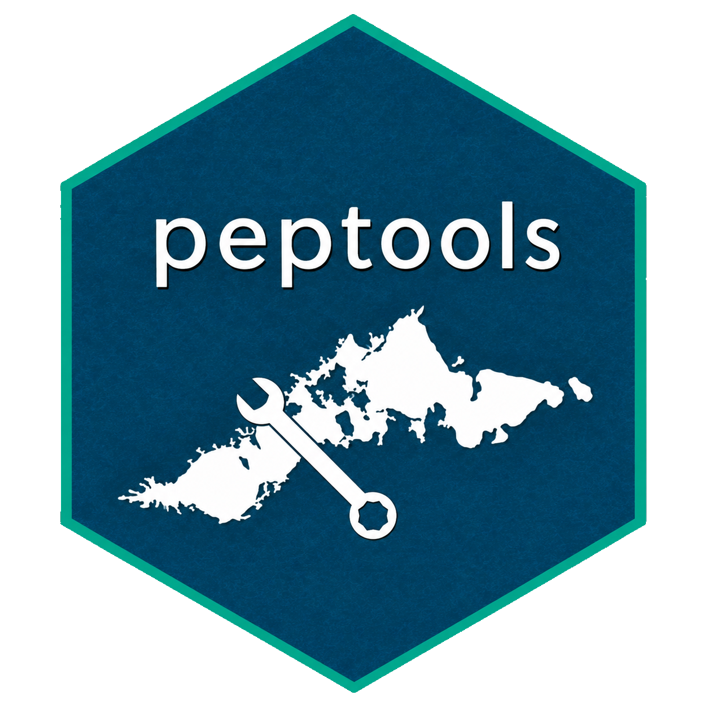

Map water quality data for a selected year
Source:R/show_sitemappep.R
show_sitemappep.RdMap water quality data for a selected year
Arguments
- dat
data frame of data returned by
read_pepwq- yrsel
numeric for years to plot, see details
- mosel
numeric for months to plot, see details
- param
chr string indicating which water quality value to plot, one of "chla" for chlorophyll, "sd" for secchi depth, or "tn" for total nitrogen
- bay_segment
chr string for the bay segment, one or all of "1a", "1b", "2", or "3"
- maxrel
numeric for the maximum quantile value for scaling if
relative = T, this prevents outliers from skewing the scale- relative
logical indicating if sizes and colors are relative to the entire water quality data base, otherwise scaling is relative only for the points on the map
Value
A leaflet object
Details
Year estimates for the selected parameter are based on median observations across months. All twelve months are used if mosel = NULL (default). Monthly estimates for the selected parameter are based on median observations across years. All years are used if yrsel = NULL (default).
The color ramp and size scaling of points are reversed for Secchi observations.
Three ESRI basemaps can be selected from the layer control on the map: World Gray (default), World Imagery, and World Topo Map.